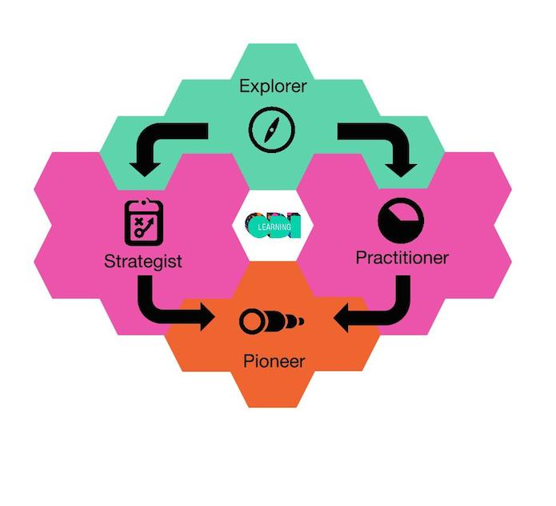

Having developed an Open Data Skills Framework to benchmark open data skills and manage learner journeys, the ODI is integrating the framework into its courses and Data Lexicon for better guidance and clarity on open data skills
As experts within the Open Data Skills Framework, Open Data Pioneers apply their data knowledge to their sector to solve challenges. CC BY 2.0, uploaded by [the ODI](https://www.flickr.com/photos/ukodi/8510825512/in/album-72157634593115960/ “the ODI").
Open data can create impact. It can help make governments more transparent, businesses more efficient and NGOs better informed. But to create impact and unlock value with open data, you need to be equipped with the right set of knowledge and skills.
Open data is a relatively new field. Its potential is being realised increasingly as it is slowly integrated into the strategies of organisations. Those working with open data or on open data initiatives often have to learn the skills as they go. There is no clear language to describe the knowledge and skills of those working with open data; nothing with which to benchmark a single individual’s expertise, and point to where they are in their learning journey.
This is why the ODI has created the Open Data Skills Framework.

The Open Data Skills Framework is a simple, three-tier framework that describes the knowledge and skills of anyone interacting with open data, from beginner through to expert level.
1) Explorers: an Open Data Explorer has a basic understanding of open data. They can define it, point to examples or case studies and explain how it can be used to create change.
2a) Strategists: an Open Data Strategist is someone who integrates open data into a strategy or manages an open data project. They have the planning and management techniques to drive forward an open data initiative, and they understand the challenges inherent in this process.
2b) Practitioners: Open Data Practitioners have the practical skills necessary to conduct basic operations on an open dataset. They get hands-on with the data, and are familiar with the tools and techniques necessary to manage and publish an open dataset.
3) Pioneers: Open Data Pioneers apply their data knowledge to their sector to solve challenges. They can point to sector-specific case studies, identify future trends in the sector and understand the data challenges specific to their sector.
The Skills Framework enables learners to identify where they are in their learning journey. Everybody starts their journey as an 'explorer'. They may then wish to focus on either strategic or practical skills, or both. Ideally, every learner will eventually apply their learning back to their sector to help solve sector-specific challenges, and drive change in their domain.
Focused learning and tracking progress
This year, we will be integrating the Open Data Skills Framework into our current course offering to help you find the course you need to advance your skills. Through this approach, every piece of learning content we produce will be attached to the relevant skill level in the framework. You will get a curated overview of which courses and learning materials match your skills needs.
We are also looking to introduce badges to certify learners as having acquired each particular skill. This will enable you to track and assess your own learning, as well as the learning of those you manage, teach or collaborate with.
This structured learning framework will provide a clear language around open data skills, and enable those working with open data to achieve their goals and measure progress.
We want to hear from you
Where do you see yourself in the Open Data Skills Framework? What are you trying to achieve, and what extra skills do you need to achieve your goal? Write in to [email protected] to share your thoughts, or visit our 'Courses' page to see how our training can benefit you.
If you have ideas or experience in open data that you'd like to share, pitch us a blog or tweet us at @ODIHQ.